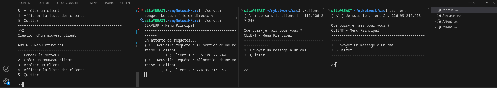

Auteurs
Les auteurs de ce projet sont :
- Sita COULIBALY (GitHUB : c0ulday)
- Joris Weets
P2026 - ESISAR - 3APP
Introduction
Bienvenue dans la documentation de I Make My Own Network.
Installation
Suivez ces étapes pour installer le projet : Prérequis : LINUX, quelques neurones.
- Étape 1 : Télécharger les fichiers via chamilo ou via le repository GitHub de c0ulday nommé myNetwork.
- Étape 2 : Compiler le projet à l'aide du Makefile en faisant : make dans le dossier myNetwork/src.
Utilisation
Voici comment utiliser le projet :
- Lancer l'application en ouvrant plusieurs terminaux, chacun réprésentant l'Admin, le Serveur et chaque Client :
- ./admin
- ./serveur
- ./client
- Suivre les instructions affichées dans les terminaux.
Exemples
Voici une image en guise d'exemple :

Exemple du lancement de programme pour 3 clients